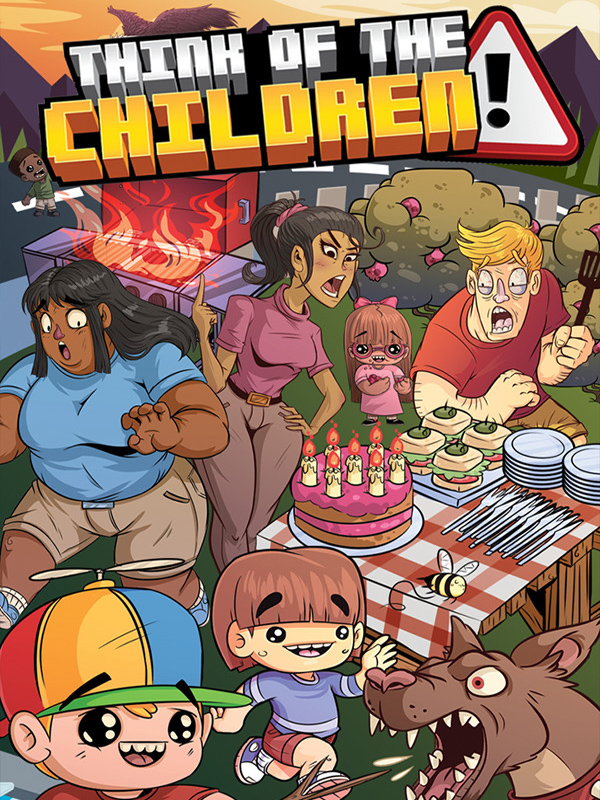

Think of the Children
Think of the Children
Details
|  | |
| Playtime | Not Played |
| Last Activity | Never |
| Added | 4/12/2022 22:47:41 |
| Modified | 4/12/2022 23:00:14 |
| Completion Status | $Check Out |
| Library | Steam |
| Source | Steam |
| Platform | PC (Windows) |
| Release Date | 10/19/2017 |
| Community Score | 70 |
| Critic Score | 80 |
| User Score | |
| Genre | Simulator |
| Developer | Jammed Up Studios |
| Publisher | Fellow Traveller Surprise Attack Games |
| Feature | Co-Operative Multiplayer Single Player Split Screen |
| Links | Official Website Steam GOG |
| Tag | [EMT] Logo Missing |
Description

Little Bobby’s dead, the BBQ is on fire, Jen’s eating poisonous berries and the birthday cake still needs icing. It’s just another wonderful day out with the kids in Think of the Children, a frantic parenting simulator for up to four players.
Hauled before the court for bad parenting and endangering the lives of your children, the Prosecutors present a series of events as evidence that will either condemn or exonerate you: a birthday party at the park, a day at the zoo, a camping trip, an unexpected visit to the Australian Outback and more. Each of these locations proves to be far more dangerous than they sound, and even the tamest of environments are filled with deadly hazards.
Run solo, or team up with other parents to play through each trip in flashback to prove your parenting skills-and your innocence-to the judge, and avoid going to jail.